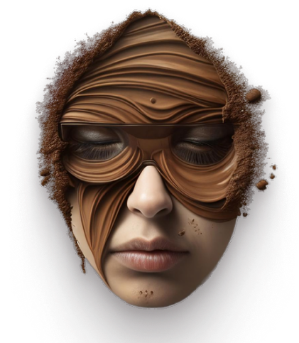

Na Rybena Café, somos apaixonados por oferecer uma experiência excepcional de café em um ambiente acolhedor. Selecionamos cuidadosamente os melhores grãos do mundo para garantir qualidade em cada xícara. Nossos talentosos baristas preparam uma variedade de cafés, desde expressos clássicos até cappuccinos indulgentes. Além disso, oferecemos uma seleção de acompanhamentos deliciosos, como bolos frescos e sanduíches artesanais. Valorizamos cada cliente e buscamos tornar cada visita memorável. Junte-se a nós na Rybena Café para descobrir o verdadeiro prazer do café.
O café é apreciado não apenas por seu sabor e aroma, mas também por seus benefícios à saúde. Além de proporcionar energia e melhorar a concentração, ele é rico em antioxidantes, contribuindo para a prevenção de doenças cardiovasculares e neurodegenerativas. Para os praticantes de atividade física, o café pode melhorar o desempenho e acelerar o metabolismo. No entanto, é crucial consumi-lo com moderação para evitar efeitos colaterais adversos.